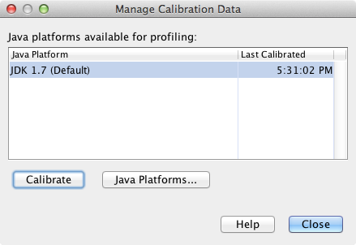
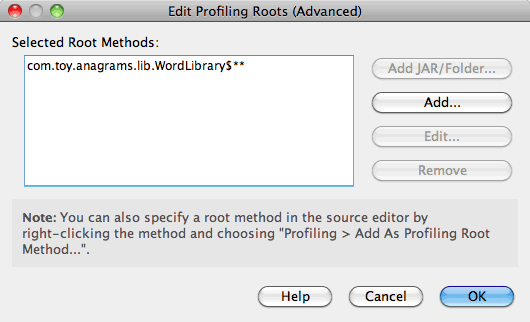
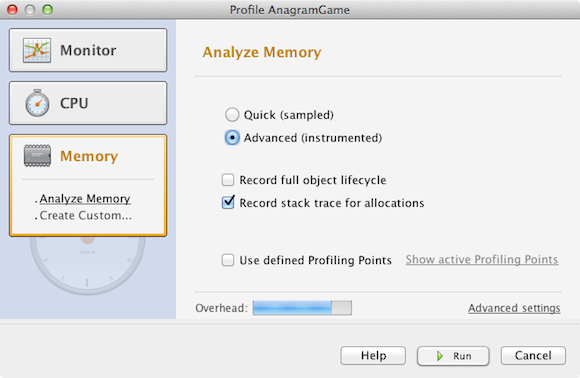

Apache NetBeans
Apache NetBeansLatest release
Introdução às Aplicações Java de Criação de Perfil no NetBeans IDE
| This tutorial needs a review. You can open a JIRA issue, or edit it in GitHub following these contribution guidelines. |
O NetBeans IDE inclui uma poderosa ferramenta de criação de perfil que pode fornecer informações importantes sobre o comportamento de sua aplicação em runtime. A ferramenta de criação de perfis do NetBeans permite monitorar os estados dos threads, o desempenho da CPU e o uso de memória da aplicação dentro do IDE com custo adicional relativamente pequeno.
Este documento de introdução é uma visão geral das ferramentas de criação de perfil incluídas no IDE e um guia para ajudar a iniciar rapidamente a criação de perfil em projetos NetBeans. Este documento pretende demonstrar as diversas tarefas de criação de perfil disponíveis no IDE e os resultados de criação de perfil que podem ser obtidos na criação de perfil de um projeto. Ele não abrange as funcionalidades de criação de perfil incluídos no IDE nem explora como interpretar os resultados da criação de perfil para resolver problemas específicos de desempenho na aplicação.
Este documento demonstrará como usar a ferramenta de criação de perfil para obter dados de criação de perfil acerca da aplicação de amostra do Jogo de Anagramas, uma aplicação Java simples incluída no IDE. Apesar do Jogo de Anagramas ser um projeto de aplicação Java bem simples, você pode seguir as mesmas etapas para a criação de perfil de aplicações Java maiores e mais complexos, assim como projetos de aplicações da web e corporativas.
Este documento mostra como usar o IDE para criar perfis em aplicações e obter os seguintes resultados de criação de perfil:
-
Comportamento de uma aplicação em runtime
-
Tempo de CPU usado por um dos métodos de aplicação
-
Criação do objeto
Além disso, este documento demonstra como obter e comparar snapshots de resultados de criação de perfil.

Figure 1. O conteúdo desta página se aplica ao NetBeans IDE 7.3, 7.4 e 8.0
Introdução
Pré-requisitos
Este tutorial pressupõe que você tenha algum conhecimento básico das tecnologias a seguir, ou alguma experiência de programação com elas:
-
Programação em Java
-
NetBeans IDE
Software Necessário para o Tutorial
Para este tutorial, você precisa ter instalado no computador os seguintes softwares:
| Software ou Recurso | Versão Necessária |
|---|---|
7.3, 7.4, 8.0 |
|
Versão 7 ou 8 |
Observações.
-
A ferramenta de criação de perfil está incorporada no NetBeans IDE e nenhuma configuração especial é necessária para começar a criar o perfil de uma aplicação.
-
Se você estiver usando o NetBeans IDE 7.2 ou anterior, consulte Introdução a Criação de Perfis de Aplicações Java no NetBeans IDE 7.2
Criando Perfis pela Primeira Vez
Na primeira vez em que a ferramenta de criação de perfis é usada, o IDE precisa realizar algumas operações iniciais para garantir que seja obtidos resultados precisos e para integrar a ferramenta com o projeto. Para demonstrá-lo, será criado o projeto Jogo de Anagramas e, em seguida, executada a calibração. O IDE realizará automaticamente a integração na primeira vez em que for criado um perfil no projeto Jogo de Anagramas.
Criando o Projeto de Amostra
Neste documento, a criação de perfil será usada na aplicação de amostra Jogo de Anagramas. Para isso, primeiro use o assistente de Novo Projeto para criar a aplicação de amostra e defina o projeto como o Projeto Principal.
Para criar a aplicação Jogo de Anagramas execute as seguintes etapas.
-
Escolha Arquivo > Novo Projeto (Ctrl-Shift-N; ⌘-Shift-N no Mac) no menu principal.
-
No assistente Novos Projetos, selecione a categoria Amostras > Java.
-
Selecione o projeto Jogo de Anagramas. Clique em Próximo.
-
Selecione uma localização para o projeto. Clique em Finalizar.
Quando você clica em Finalizar, o IDE cria o projeto de amostra Jogo de Anagramas.
-
Escolha Executar >Definir Projeto Principal > Jogo de Anagramas do menu principal.
Depois que você definir o projeto como o principal você pode ver o nome do projeto Jogo de Anagramas em negrito na janela Projetos. Por default, ao usar o IDE para criar o perfil de um projeto, o IDE criará o perfil do projeto principal. Se nenhum projeto estiver definido como o projeto principal, o IDE irá criar o perfil do projeto selecionado na janela Projetos.
Usando o Profiler pela Primeira Vez
Para atingir resultados precisos de criação de perfil, é preciso ter os dados calibrados para cada plataforma Java a ser usada para a criação de perfil. Se a ferramenta de criação de perfil estiver sendo usada pela primeira vez ou se os dados de calibração não estiverem disponíveis para a plataforma Java, o IDE pedirá para executar o processo de calibração da plataforma.
A calibração só precisa ser executada uma vez. No entanto, se forem feitas alterações substanciais na configuração da máquina que afetem o seu desempenho, será preciso executar a calibração novamente. É possível executar a calibração a qualquer momento executando-se as etapas a seguir.
-
Escolha Comandos Avançados > Gerenciar Dados de Calibração no menu Perfil.
-
Selecione a Plataforma Java. Clique em Calibrar.

Figure 2. Caixa de diálogo para selecionar a Plataforma Java ao calibrar.
É exibida uma caixa de diálogo quando a operação de calibração estiver concluída. Clique em Mostrar Detalhes para exibir uma caixa de diálogo com informações sobre os resultados da calibração. Os dados de calibração para cada plataforma Java são salvos no diretório .nbprofile no diretório home.

Figure 3. Caixa de diálogo Informações de Calibração
Observação. Se você estiver usando o NetBeans IDE 7.4 ou anterior, escolha Comandos Avançados > Executar Calibração do Criador de Perfil no menu Perfil e selecione a plataforma Java na caixa de diálogo Selecionar Plataforma Java para Calibração.
Figure 4. Caixa de diálogo para selecionar a Plataforma Java ao calibrar.
Selecionando uma Tarefa de Criação de Perfil
O IDE fornece algumas definições internas que permitem ajustar a criação de perfil conforme a necessidade. Por exemplo: é preciso diminuir o custo adicional de criação de perfil ao custo de alguma redução na quantidade de informações geradas. No entanto, pode levar algum tempo para compreender o significado e o uso das diversas definições disponíveis. Para muitas aplicações, as definições default especificadas para as tarefas de criação de perfil são suficientes na maioria dos casos.
Ao criar perfil em um projeto, você usa a caixa de diálogo Selecionar Tarefa de Criação de Perfil para selecionar uma tarefa de acordo com o tipo de informações de criação de perfil que se deseja obter. A tabela seguinte descreve as tarefas de criação de perfil e os resultados de criação de perfil obtidos da tarefa em execução.
| Tarefa de Criação de Perfil | Resultados |
|---|---|
Escolha esta opção para obter informações de alto nível sobre as propriedades da JVM de destino, incluindo a atividade de thread e as alocações de memória. |
|
Escolha esta opção para obter dados detalhados sobre o desempenho da aplicação, incluindo a hora para executar os métodos e o número de vezes que o método é chamado. |
|
Escolha esta opção para obter dados detalhados sobre a alocação de objetos e a coleta de lixo. |
A caixa de diálogo Selecionar Tarefa de Criação de Perfil é a interface principal para executar uma tarefa de criação de perfil. Depois de selecionada uma tarefa, suas definições podem ser modificadas para ajustar os resultados a serem obtidos. Para cada uma das tarefas de criação de perfil, é possível também criar e salvar tarefas de criação de perfil personalizadas com base na tarefa. Quando você cria uma tarefa personalizada de criação de perfil, a tarefa personalizada fica listada na caixa de diálogo Selecionar Tarefa de Criação de Perfil para que ela possa encontrar e executar facilmente as definições personalizadas posteriormente. Durante uma tarefa de criação de perfil personalizada, é possível modificar definições mais avançadas clicando em Definições Avançadas na caixa de diálogo Selecionar Tarefa de Criação de Perfil.
Monitorando uma Aplicação
Quando você escolhe a tarefa Monitorar, a aplicação de destino é iniciada sem nenhuma instrumentação. Ao monitorar uma aplicação, você obtém informações de alto nível sobre várias propriedades importantes da JVM de destino. Como o monitoramento de uma aplicação impõe um custo adicional muito baixo, você pode executar a aplicação neste modo por períodos maiores.
Realize as etapas seguintes para monitorar o projeto Jogo de Anagramas.
-
Confirme se o projeto Jogo de Anagramas está definido como o projeto principal.
-
Escolha Perfil > Perfil do Projeto Principal no menu principal.
Alternativamente, clique com o botão direito do mouse no nó do projeto na janela Projetos e escolha Perfil.
-
Selecione Monitorar na caixa de diálogo Selecionar Tarefa de Criação de Perfil.
-
Selecione opções do monitor adicionais, se desejado. Clique em Executar.

Figure 5. Selecionando a tarefas de criação de perfil Monitorar Aplicação
Você pode passar o cursor sobre uma opção para exibir uma dica de ferramenta com detalhes sobre a opção.
Quando você clica em Executar, o IDE inicia a aplicação e a janela do Profiler é aberta no painel esquerdo do IDE. A janela Profiler contém os controles que permitem:
-
Controlar a tarefa de criação de perfil
-
Visualizar o status da tarefa atual de criação de perfil
-
Exibir os resultados da criação de perfil
-
Gerenciar snapshots dos resultados da criação de perfil
-
Ver estatísticas de telemetria básicas
É possível usar os controles na janela Profiler ou no menu principal para abrir as janelas onde você pode exibir os dados de monitoramento. É possível usar a janela Visão Geral de Telemetria para obter rapidamente uma visão geral dos dados de monitoramento em tempo real. Se você colocar o cursor sobre um gráfico, poderá ver estatísticas mais detalhadas sobre os dados exibidos no gráfico. É possível clicar duas vezes em qualquer um dos gráficos na janela Visão Geral de Telemetria para abrir uma versão maior e mais detalhada do gráfico.

Figure 6. Janela Visão Geral de Telemetria
Se a visão geral não for aberta automaticamente, selecione Janela > Criação de Perfil > Visão Geral de Telemetria para abrir a visão geral na janela de Saída. É possível abrir a janela Visão Geral de Telemetria de VM e ver os dados de monitoramento a qualquer momento durante uma sessão de criação de perfil.
Analisando o Desempenho da CPU
Quando você seleciona a tarefa de CPU, o IDE cria o perfil do desempenho da CPU no nível de método (tempo de execução) de sua aplicação e processa o resultado em tempo real. Você pode optar por analisar o desempenho obtendo periodicamente um traço da pilha ou instrumentando os métodos na aplicação. Você pode optar por instrumentar todos os métodos ou limitar a instrumentação a uma parte do código da aplicação, até mesmo a um fragmento específico de código.
Para analisar o desempenho da CPU, você escolhe como o perfil da aplicação é criado selecionando uma das opções a seguir.
-
Rápida (Amostragem). Neste modo, o IDE faz as amostras da aplicação e e usa um rastreamento de pilha periodicamente. Essa opção é menos precisa do que os métodos de instrumentação, mas o custo adicional é menor. Essa opção ajuda a localizar métodos que talvez você queira instrumentar.
-
Avançado (Instrumentado). Neste modo, os métodos definidos da aplicação são instrumentados. O IDE registra onde os threads entram e saem dos métodos do projeto, permitindo ver quanto tempo é gasto em cada método. Quando você insere um método, os threads geram um evento "entrada de método". Os threads geram um evento "saída de método" correspondente ao sair do método. Os timestamps para os dois eventos são registrados. Esses dados são processados em tempo real.
Você pode escolher instrumentar todos os métodos na aplicação ou limitar a instrumentação a um subconjunto do código da aplicação ao especificar um ou mais métodos-raiz. Você pode especificar um método-raiz usando o menu pop-up no código-fonte ou clicando em personalizar para abrir a caixa de diálogo Editar Raízes da Criação de Perfil.
Um método-raiz é um método, classe ou pacote em seu código-fonte que você especifica como uma raiz da instrumentação. Os dados de criação de perfil são coletados quando um dos threads da aplicação entra e sai da raiz de instrumentação. Nenhum dado de criação de perfil é coletado até que um dos threads da aplicação entre no método-raiz. Especificar um método-raiz pode reduzir significativamente o overhead da criação de perfil. Para algumas aplicações, a especificação de um método-raiz pode ser a única forma de obter dados detalhados e/ou realistas de desempenho, pois a criação de perfil da aplicação inteira pode gerar dados de perfil demais, fazendo com que a aplicação se torne inútil ou até mesmo causar um erro fatal da aplicação.
Observação: o modo de perfil Rápido não está disponível no modo NetBeans IDE 7.0 e anterior. Você só pode usar instrumentação para obter resultados de criação de perfil, mas pode escolher instrumentar a aplicação inteiro ou limitar a instrumentação a uma parte da aplicação ao especificar um ou mais métodos-raiz.
É possível ainda ajustar quanto do código terá perfil criado usando um filtro para limitar os códigos-fonte que são instrumentados.
Agora você usará o IDE para analisar o desempenho da CPU da aplicação Jogo de Anagramas. Você selecionará a opção Parte da Aplicação e, a seguir, WordLibrary.java como raiz da criação de perfil. Ao selecionar essa classe como raiz da criação de perfil, você limita a criação de perfil aos métodos nessa classe.
-
Clique no botão Interromper na janela do Profiler para interromper a sessão anterior de criação de perfil (se ainda estiver em execução).
-
Escolha Perfil > Perfil do Projeto Principal no menu principal.
-
Selecione CPU na caixa de diálogo Selecionar Tarefa de Criação de Perfil.
-
Selecione Avançado (Instrumentado).
Para usar essa opção, é preciso também especificar um método-raiz de criação de perfil.
-
Clique em Personalizar para abrir a caixa de diálogo Editar Raízes da Criação de Perfil.

Figure 7. Selecione Tarefas de Criação de Perfil da CPU
-
Na caixa de diálogo Editar Raízes da Criação de Perfil, expanda o nó Jogo de Anagramas e selecione
Sources/com.toy.anagrams.lib/WordLibrary. Ao criar o perfil de um projeto, você pode especificar vários métodos-raiz.

Figure 8. Caixa de diálogo para selecionar os métodos-raiz
-
Clique no botão Avançado para abrir a caixa de diálogo Editar Raízes da Criação de Perfil (Avançado), que fornece opções mais avançadas para adicionar, editar e remover métodos-raiz.

Figure 9. Caixa de diálogo para especificar os métodos-raiz
É possível ver que WordLibrary está listado como o método-raiz. Clique em OK para fechar a caixa de diálogo Editar Raízes da Criação de Perfil.
-
Clique em OK para fechar a caixa de diálogo Editar Raízes da Criação de Perfil.
Após você selecionar a raiz de criação do perfil é possível clicar em editar na caixa de diálogo Selecionar Tarefa de Criação de Perfil para modificar o método-raiz selecionado.
-
Selecione Criar perfil somente das classes do projeto no valor Filtro.
O Filtro permite que você limite as classes que estão instrumentadas. É possível selecionar entre os filtros predefinidos de criação de perfil do IDE ou criar seus próprios filtros personalizados. Você pode clicar em Mostrar valor do filtro para ver uma lista das classes que terá o perfil criado quando o filtro selecionado for aplicado.

Figure 10. Caixa de Diálogo Mostrar Valor do Filtro
-
Clique em Executar na caixa de diálogo Selecionar Tarefa de Criação de Perfil para iniciar a sessão de criação de perfil.
Quando você clica em Executar, o IDE inicia a aplicação e começa a sessão de criação de perfil. Para exibir os resultados da criação de perfil, clique em Resultados em tempo real na janela Criador de Perfil para abrir a janela Resultados em Tempo Real. A janela Resultados em Tempo Real exibe os dados de criação de perfil coletados até o momento. Os dados exibidos são atualizados, por default, a cada poucos segundos. Quando você analisa o desempenho da CPU, a janela Resultados em Tempo Real exibe informações sobre o tempo gasto em cada método e o número de chamadas de cada método. É possível ver que, no Jogo de Anagramas, somente os métodos-raiz selecionados são inicialmente chamados.

Figure 11. Resultados em Tempo Real da CPU
É possível navegar rapidamente para o código-fonte contendo qualquer um dos métodos listados clicando com o botão direito do mouse no nome do método e selecionar Ir para Código-fonte. Quando você clica em Ir para Código-fonte, a classe é aberta no Editor de código-fonte.
Analisando o Uso da Memória
A tarefa Analisar Uso da Memória fornece dados sobre objetos que foram alocados na aplicação alvo, como o número, o tipo e a localização dos objetos alocados.
Para analisar o desempenho da memória, você escolhe o volume de dados que deseja obter ao selecionar uma das seguintes opções:
-
Rápida. Quando esta opção é selecionada, o criador de perfil faz amostras da aplicação para oferecer dados limitados a objetos ativos. Esta opção só rastreia os objetos ativos e não rastreia alocações ao instrumentar. Não é possível para registrar rastreamentos de pilha ou para usar pontos de criação de perfil se você selecionar esta opção. Esta opção incorre em um overhead significativamente mais baixo que a opção Avançado.
-
Avançado. Quando esta opção é selecionada na aplicação, você pode obter informações sobre o número, tipo e local dos objetos alocados. Todas as classes carregadas atualmente pelo destino JVM (e cada nova classe, conforme é carregada) são instrumentadas para produzir informações sobre alocações de objeto. É necessário selecionar esta opção se você quiser usar pontos de criação de perfil ao analisar o uso de memória ou se você desejar gravar a pilha de chamada. Estas opções incorrem em um overhead de criação de perfil maior que a opção Rápido.
Se você selecionar a opção Avançado, também poderá definir as opções a seguir.
-
*Registrar Estilo de Vida Completo do Objeto * Selecione esta opção para registrar todas as informações de cada objeto, incluindo o número de gerações sobrevividas.
-
Registrar Rastreamento de Pilha para Alocações. Selecione esta opção para registrar a pilha de chamadas completa. Essa opção permite exibir a árvore de chamadas reversa das chamadas de método durante a exibição de uma tela da memória.
-
Usar Pontos de Criação de Perfil definidos. Selecione esta opção para ativar pontos de criação de perfil. Os pontos de criação de perfil desativados são ignorados. Quando essa opção está desmarcada, todos os pontos de criação de perfil no projeto são ignorados.
O medidor de Custo Adicional na janela Selecionar Tarefas de Criação de Perfil oferece uma aproximação do aumento ou diminuição no custo adicional da criação de perfil de acordo com as opções de criação de perfil selecionadas.
Neste exercício, você usará o IDE para analisar o desempenho da memória da aplicação Jogo de Anagramas. Você escolherá a opção Avançado e selecionará Registrar Rastreamento de Pilha para Alocações para que o IDE registre a pilha de chamada completa. Ao selecionar essa opção, quando você obtiver uma tela da memória, poderá exibir uma árvore de chamada reversa.
-
Clique no botão Interromper na janela do Profiler para interromper a sessão anterior de criação de perfil (se ainda estiver em execução) e interrompa a aplicação Jogo de Anagramas.
-
Escolha Perfil > Perfil do Projeto Principal no menu principal.
-
Selecione Memória na caixa de diálogo Selecionar Tarefa de Criação de Perfil.
-
Selecione Avançado.
-
Selecione Registrar Rastreamento de Pilha para Alocações. Clique em Executar para iniciar a sessão de criação de perfil.
Observe que, quando você selecionou essa opção, o medidor de Custo Adicional aumentou substancialmente, mas a aplicação é pequena o suficiente para que o impacto no desempenho seja gerenciável.

Figure 12. Selecione Tarefa de Criação de Perfil da Memória
Quando você clica em Executar, o IDE inicia a aplicação e começa a sessão de criação de perfil. Para exibir os resultados da criação de perfil, clique em Resultados em tempo real na janela Criador de Perfil para abrir a janela Resultados em Tempo Real. A janela Resultados em Tempo Real exibe informações sobre o tamanho e o número de objetos que estão alocados em nosso projeto.
Por default, os resultados são armazenados e exibidos pelo número de bytes em tempo real, mas você pode clicar em um cabeçalho de coluna para alterar como os resultados são exibidos. Você também pode filtrar os resultados ao digitar um nome de classe na caixa de filtro abaixo da lista.

Figure 13. Resultados da Criação de Perfil da Memória
Obtendo Snapshot
Quando uma sessão de criação de perfil está em andamento, é possível capturar resultados da criação de perfil obtendo um snapshot. Um snapshot captura os dados de criação de perfil no momento em que você faz o snapshot. No entanto, um snapshot é diferente dos resultados de criação de perfil em tempo real nos seguintes sentidos:
-
Snapshots podem ser examinados quando não há sessão de criação de perfil em execução.
-
Snapshots podem conter um registro mais detalhado dos dados de criação de perfil do que resultados em tempo real.
-
Snapshots podem ser facilmente comparados (snapshots de memória).
Como uma sessão de criação de perfil não precisa estar em andamento para abrir os snapshots de um projeto, é possível abrir um snapshot a qualquer momento selecionando-o na lista de snapshots salvos na janela Profiler e clicando em Abrir.
Obtendo e Comparando Snapshots de Memória
Para a aplicação Jogos de Anagrama, é possível fazer um snapshot dos resultados para ver o rastreamento de pilha de alocação dos objetos do tipo String . A seguir, é possível obter outro snapshot e compará-los. Ao comparar snapshots de memória, você pode ver quais objetos foram criados ou liberados do heap no intervalo entre os momentos em que os snapshots foram feitos. Os snapshots devem ser comparáveis, o que significa que o tipo de criação de perfil (por exemplo, Alocações vs. Execuções) e o número de objetos rastreados devem coincidir.
Neste exercício, você utilizará e salvará um snapshot de seu projeto. A seguir, você fará um segundo snapshot e o comparará com o snapshot salvo.
-
Assegure-se de que a sessão de criação de perfil ainda esteja em execução. (Se você interrompeu a sessão de criação de perfil, repita as etapas para analisar o desempenho da memória e abra a janela Resultados em Tempo Real.)
-
Clique com o botão direito do mouse na linha que contém
java.lang.Stringna janela Resultados em Tempo Real e selecione Obter Snapshot e Mostrar Rastreamentos da Pilha de Alocação.
-
Você pode usar o filtro na janela Resultados em Tempo Real para ajudá-lo a localizar a linha.

Figure 14. Snapshot dos Resultados da Criação do Perfil de Memória
O IDE obtém um snapshot da memória e abre o snapshot na guia Rastreamentos da Pilha de Alocação. Na guia Rastreamentos da Pilha de Alocação, é possível explorar a árvore de chamadas reversa para os métodos que instanciaram o objeto selecionado.
-
Clique no botão Salvar Snapshot para o Projeto na barra de ferramentas de snapshot (ou Ctrl+S no Mac) para salvar o snapshot para o seu projeto. Quando você salva um snapshot em seu projeto, ele é adicionado à lista dos snapshots salvos do Jogo de Anagramas na janela Profiler. Por default, os snapshots são salvos fisicamente no diretório
nbproject/private/profilerde seu projeto. O sufixo.npsé acrescentado aos snapshots salvos.
Observação. Você pode salvar snapshots em qualquer lugar em seu sistema de arquivos, porém somente os snapshots salvos na localização default de seu projeto serão listados na janela Profiler. Também é possível clicar no botão "Salvar view atual na imagem" na barra de ferramenta de snapshot para salvar o snapshot como arquivos de imagem ( .png ) que podem ser exibidos fora do IDE.
-
Obtenha outro snapshot clicando no botão Obter Snapshot de Resultados Coletados na barra de ferramentas Resultados em Tempo Real (ou, alternativamente, clique no botão Obter Snapshot na janela Profiler). Salve o snapshot.
-
Na janela de um dos snapshots de memória, clique no botão Calcular Diferença (
 ) na barra de ferramentas do snapshots. Como alternativa, selecione Perfil > Comparar Snapshots de Memória no menu principal.
) na barra de ferramentas do snapshots. Como alternativa, selecione Perfil > Comparar Snapshots de Memória no menu principal. -
Em Selecionar Snapshot para Comparar, selecione um dos snapshots abertos na lista. Clique em OK.

Figure 15. Caixa de diálogo Selecionar Snapshots para Comparar
Quando um snapshot de memória é aberto, você pode compará-lo a outros snapshots de memória comparáveis. É possível comparar o snapshot com snapshots não salvos que estejam atualmente abertos ou com snapshots que estão salvos para o projeto ou em outro local do sistema.
Quando você clica em OK, a janela Comparação de Conectividade é aberta, exibindo as diferenças entre os dois snapshots de memória.

Figure 16. guia mostrando os resultados da Comparação de Conectividade de dois snapshots de memória
A comparação de snapshots é semelhante a um snapshot de memória, mas exibe somente as diferenças entre os dois snapshots comparados. Quando você observa os números nas colunas, pode ver que um sinal de mais ( + ) indica que o valor aumentou e que um sinal de mais ( - ) indica que o valor diminuiu. Na coluna Bytes em Tempo Real, uma barra gráfica permite ver facilmente a diferença nos bytes alocados. Se a metade esquerda da célula naquela coluna estiver verde, isso significa que o número de bytes alocados para aquele objeto era menor quando o segundo snapshot foi feito do que quando o primeiro foi feito. Se a metade direita da célula estiver vermelha, isso significa que o número de bytes alocados é maior no segundo snapshot do que no primeiro.
Observação. Você também pode definir pontos de criação de perfil Obter Snapshot para obter controle mais preciso sobre quando as capturas são feitas. Para saber mais sobre como obter snapshots usando pontos de criação de perfil, consulte Usando Pontos de Criação de Perfil no NetBeans IDE.
Consulte Também
Isso conclui a introdução à criação de perfil de uma aplicação usando o NetBeans IDE. Esse documento demonstrou os conceitos básico sobre como usar o IDE para criar o perfil de um projeto NetBeans simples e exibir os resultados da criação de perfil. As etapas definidas acima podem ser aplicadas ao criar o perfil da maioria dos projetos. A criação de perfil de projetos mais complexos, como aplicações corporativas e projetos de forma livre, podem exigir etapas de configuração adicionais.
Para obter informações mais detalhadas sobre as definições e funcionalidades de criação de perfil não abordadas neste documento, consulte a documentação incluída no produto e disponível no item de menu Ajuda.
Para ver documentos relacionados, consulte os seguintes recursos:
-
FAQs do Profiler do NetBeans Um documento contendo as perguntas frequentes em relação à criação de perfil de aplicações no NetBeans IDE
-
Screencast: Pontos de Criação de Perfil, Gráfico de Drill-Down, HeapWalker Demonstração de alguns das funcionalidades de criação de perfil no NetBeans IDE.
-
Encontrando Vazamentos de Memória usando o Profiler do NetBeans Laboratório prático sobre o site JavaPassion
-
profiler.netbeans.org Site do projeto Criador de perfil do NetBeans